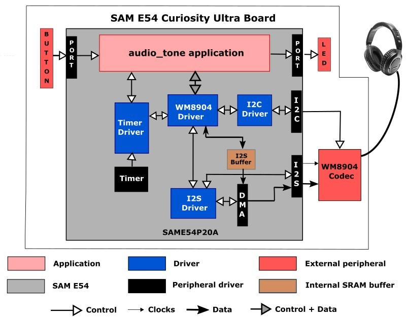
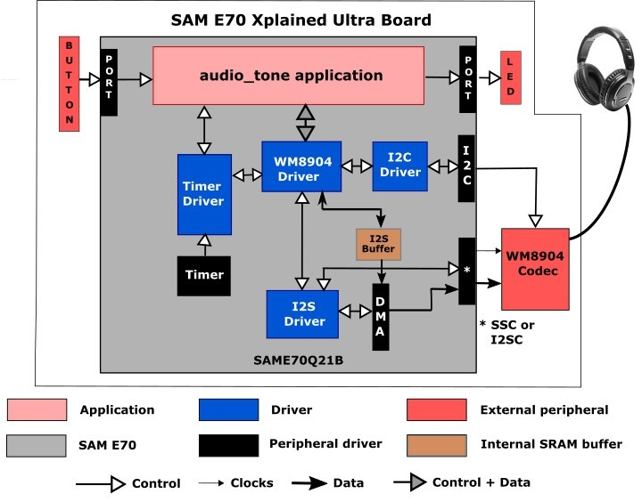

Architecture
There are eight different projects packaged in this application.
PIC32 MZ EF Curiosity 2.0 Project:
One project runs on the PIC32 MZ EF Curiosity 2.0 board, using the PIC32MZ2048EFM144 microcontroller with 2 MB of Flash memory and 512 KB of RAM running at 198 MHz. The PIC32 MZ EF Curiosity 2.0 board includes the following features:
Four push buttons (SW1-SW4, only SW1 is used)
Four LEDs (LED1-LED4, only LED1 is used)
AK4954 Codec Daughter Board mounted on X32 HEADER 2 socket
The PIC32 MZ EF Curiosity 2.0 board does not include the AK4954 Audio Codec daughterboard, which is sold separately on microchipDIRECT as part number AC324954.
The program takes up to approximately 3% (55 KB) of the PIC32MZ2048EFM144 microcontroller’s program space, and 23% (115 KB) of the RAM. No heap is used.
The following figure illustrates the application architecture for the PIC32 MZ EF Curiosity 2.0 configuration:

For both configurations, the I2S (Inter-IC Sound Controller) is used with the AK4954 codec. The AK4954 is configured in slave mode, meaning it receives I2S clocks (LRCLK and BCLK) from the PIC32, and the I2S peripheral is configured as a master.
SAM E54 Curiosity Ultra Projects:
Two projects run on the SAM E54 Curiosity Ultra Board, which contains a ATSAME54P20A microcontroller with 1 MB of Flash memory and 256 KB of RAM running at 48 MHz using the following features:
Two push buttons (SW1 and SW2, only SW1 is used)
Two LEDs (LED1 and 2, only LED1 is used)
WM8904 Codec Daughter Board mounted on a X32 socket
The SAM E54 Curiosity Ultra board does not include the WM8904 Audio Codec daughterboard, which is sold separately on microchipDIRECT as part number AC328904.
The non-RTOS version of the program takes up to approximately 3% (28 KB) of the ATSAME54P20A microcontroller’s program space. The 16-bit configuration uses 45% (115 KB) of the RAM. No heap is used. For the FreeRTOS project, the program takes up to approximately 1% (22 KB) of the ATSAME54P20A microcontroller’s program space, and the 16-bit configuration uses 60% (155 KB) of the RAM. No heap is used.
The following figure illustrates the application architecture for the two SAM E54 Xplained Ultra configurations (RTOS not shown):

The I2S (Inter-IC Sound Controller) is used with the WM8904 codec. The WM8904 is configured in master mode, meaning it generates the I2S clocks (LRCLK and BCLK), and the I2S peripheral is configured as a slave.
SAM E70 Xplained Ultra Projects:
Four projects run on the SAM E70 Xplained Ultra Board, which contains a ATSAME70Q21B microcontroller with 2 MB of Flash memory and 384 KB of RAM running at 300 MHz using the following features:
One push button (SW1, may be labeled as SW0 on some boards)
Two LEDs (LED1 and 2, only LED1 is used)
AK4954 or WM8904 Codec Daughter Board mounted on a X32 socket
The SAM E70 Xplained Ultra board does not include the AK4954 or WM8904 Audio Codec daughterboards, which are sold separately on microchipDIRECT as part numbers AC324954 and AC328904, respectively.
The two non-RTOS versions of the program take up to approximately 1% (18 KB) of the ATSAME70Q21B microcontroller’s program space. The 16-bit configuration uses 30% (115 KB) of the RAM. No heap is used. For the FreeRTOS project, the program takes up to approximately 1% (22 KB) of the ATSAME70Q21B microcontroller’s program space, and the 16-bit configuration uses 41% (155 KB) of the RAM. No heap is used.
The following figure illustrates the application architecture for the three SAM E70 Xplained Ultra configurations using the WM8904 (RTOS not shown). The AK4954 version is the same with the substitution of the AK4954 Driver and Codec blocks.

The AK4954 codec is only used with the SSC (Synchronous Serial Controller). The WM8904 is configured in slave mode and the SSC peripheral is a master and generates the I2SC clocks.
Depending on the project, either the SSC (Synchronous Serial Controller) or I2SC (Inter-IC Sound Controller) is used with the WM8904 codec, selected by a strapping option on the WM8904 daughterboard. When using the SSC interface, the WM8904 is configured in master mode, meaning it generates the I2S clocks (LRCLK and BCLK), and the SSC peripheral is configured as a slave. When using the I2SC interface, the WM8904 is configured in slave mode and the SSC peripheral is a master and generates the I2SC clocks. The other two possibilities (SSC as master and WM8904 as slave, or I2SC as slave and WM8904 as master) are possible, but not discussed.
SAMV71 Xplained Ultra Project:
One project runs on the SAMV71 Xplained Ultra Board, which contains a ATSAMV71Q21B microcontroller with 2 MB of Flash memory and 384 KB of RAM running at 300 MHz using the following features:
Two push buttons (SW0 and SW1, only SW0 is used)
Two LEDs (LED0 and 1, only LED0 is used)
WM8904 codec (on board)
The program takes up to approximately 1% (18 KB) of the ATSAME70Q21B microcontroller’s program space. The 16-bit configuration uses 30% (115 KB) of the RAM (with 15K of that used by the three audio buffers). No heap is used.
The architecture is the same as for the SAM E70 Ultra board configurations; however only the SSC is available.
The same application code is used without change between the seven projects.
The PIC32 or SAM microcontroller (MCU) runs the application code, and communicates with the AK4954 or WM8904 codec via an I2C interface. The audio interface between the microcontroller and the codec use the I2S interface. Audio is configured as 16-bit, 48,000 samples/second, I2S format. (16-bit, 48 kHz is the standard rate used for DVD audio. An alternate that could be used is 44,100 samples/second. This is the same sample rate used for CD's. The sample rate is configurable in the MHC.)
The Master Clock (MCLK) signal used by the codec is generated by the Peripheral Clock section of the microcontroller, and is fixed at 12 MHz.
The button and LED are interfaced using GPIO pins. There is no screen.
As with any MPLAB Harmony application, the SYS_Initialize function, which is located in the initialization.c source file, makes calls to initialize various subsystems as needed, such as the clock, ports, board support package (BSP), codec, I2S, I2C, DMA, timers, and interrupts.
The codec driver and the application state machines are all updated through calls located in the SYS_Tasks function in the tasks.c file.
The application code is contained in the several source files. The application’s state machine (APP_Tasks) is contained in app.c. It first initializes the application, which includes APP_Tasks then periodically calls APP_Button_Tasks to process any pending button presses.
Then the application state machine inside APP_Tasks is given control, which first gets a handle to a timer driver instance and sets up a periodic (alarm) callback. In the next state it gets a handle to the codec driver by calling the DRV_CODEC_Open function with a mode of DRV_IO_INTENT_WRITE and sets up the volume.
The application state machine then registers an event handler APP_CODEC_BufferEventHandler as a callback with the codec driver (which in turn is called by the DMA driver).
Two buffers are used for generating a sine wave in a ping-pong fashion. Initially values for the first buffer are calculated, and then the buffer is handed off to the DMA using a DRV_CODEC_BufferAddWrite. While the DMA is transferring data to the SSC or I2SC/I2S peripheral, causing the tone to sent to the codec over I2S, the program calculates the values for the next cycle. (In the current version of the program, this is always the same unless the frequency is changed manually.) Then when the DMA callback Audio_Codec_BufferEventHandler is called, the second buffer is handed off and the first buffer re-initialized, back and forth.
A table called samples contains the number of samples for each frequency that correspond to one cycle of audio (e.g. 48 for 48000 samples/sec, and 1 kHz tone). This is divided into the MAX_AUDIO_NUM_SAMPLES value (maximum number of elements in the tone) to provide the number of cycles of tone to be generated to fill the table. Another table (appData.numSamples1 or 2) is then filled in with the number of samples for each cycle to be generated. Note: the samples table will need to be modified if changing the sample rate to something other than 48000 samples/second.
This table with the number of samples per cycle to be generated is then passed to the function APP_TONE_LOOKUP_TABLE_Initialize along with which buffer to work with (1 or 2) and the sample rate. The 16-bit value for each sample is calculated based on the relative distance (angle) from 0, based in turn on the current sample number and total number of samples for one cycle. First the angle is calculated in radians:
double radians = (M_PI*(double)(360.0/(double)currNumSamples)*(double)i)/180.0;
Then the sample value is calculated using the sine function:
lookupTable.leftData = (int16_t)(0x7FFF*sin(radians));
If the number of samples divides into the sample rate evenly, then only 1/4 (90°) of the samples are calculated, and the remainder is filled in by reflection. Otherwise each sample is calculated individually. Before returning, the size of the buffer is calculated based on the number of samples filled in.